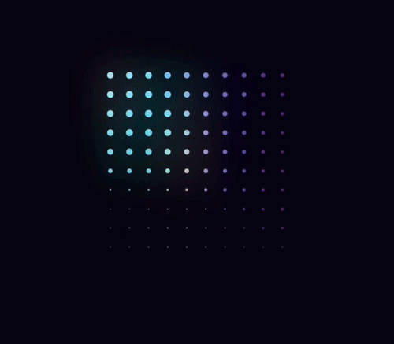

Pixel/Flow
Surfaces don’t appear — they assemble. Every state change is a field of cells switching on with a sweep, a little jitter, and a faster, reversed exit.
Foundations
Colour, grid and type. The palette is four colours; every other value is a tint for depth or state, never a new hue.
One field, all the way through
Panels, controls and line heights are whole units, so the background grid runs straight through the interface. Under a surface, cells drop to their resting size; a two-cell falloff around the edge gives it air.
Components
Each one is a surface plus a hatch layer. The hatch is generated from the element’s size, so cells stay square at any width.
Ridgeline North
Relief survey, 1 m cells. Updated two hours ago.
Lower Tarn
Hydrology layer, 912k cells. Sweep follows your cursor in.
Col de Verre
Section cut, 12,480 annotations. Leaves retract toward the exit.
Lower Tarn
Hydrology layer, 912k cells. Synced four minutes ago from the field unit.
Every surface follows the motion rule: delay is position times sweep, plus a little jitter. The idea comes from the Topography preloader. Cells rest at 2px and swell under the pointer, while panels mute the field beneath them.
TooltipsMotion
One rule: a cell’s delay is its position times the sweep, plus a random jitter. Exit mirrors it and runs a little faster. Everything else is a parameter.
Delay follows position, so the fill travels instead of fading.
A random offset per cell breaks the edge into pixels.
Exit reverses the order and runs ~25% faster.
Off is a resting cell, not nothing. The grid stays legible.
References
Where each part of the system came from, and what was taken.
topography.webflow.io preloader CTA.
Per-cell delay variables, mirrored exit, label roll. The core motion rule.
Uniform grid, sizes driven by drifting noise.
The page field: resting dots, swelling cells, wandering voids.
Glyphs are full cells over resting dots; they erode between states.
Hero wordmark and the dot-matrix display.

Round-dot matrix; a glowing wave shifts colour by phase.
Signal indicator, recoloured Bone → Signal.